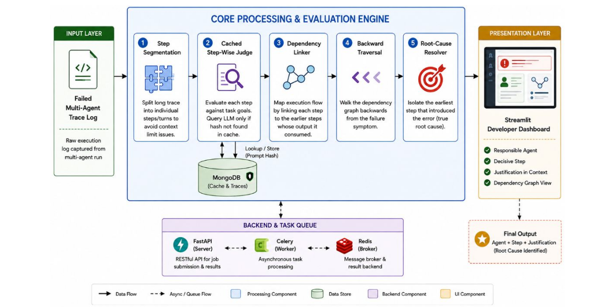

↳ Deep dive · Stage 05 of 05 · Report §4.1 Alg. 5 · FR-12/13/14
Several anomalies usually survive the closure — a fault and everything it infected. The clean-parent invariant picks the one that generated the fault rather than inheriting it, labels every node on a two-dimensional taxonomy, and draws the minimal causal chain as the explanation.
↳ What it does
Sort the suspects topologically; the first one with clean parents is the originator — everyone after it merely inherited.
↳ How it works
Deterministic to the last step: same trace, same cache state, same verdict — every run.

ordered = topo_sort(C_anom) # earliest first for cand in ordered: preds = [p for p in dag.pred(cand) if p < cand] if all(p not in anomalies for p in preds): return cand # s* — clean parents ⇒ origin label(members): root_cause | propagated_symptom | normal chain = nx.shortest_path(dag, s*, s_m)
| Verdict field | Meaning | Run 042 |
|---|---|---|
root_cause_step | Index s* of the originating fault | s7 |
responsible_agent | Persona that introduced it (the Who) | PlannerAgent |
causal_path | Minimal propagation chain (the proof) | s7 → s11 → s13 → s14 |
NodeStatus[] | Role × bug-category per node | 1 root · 3 symptoms |
Who and When together, 184 traces.
14.2% → 86.96% step isolation.
Joint accuracy vs <30% baselines.
Traversal + taxonomy under regression.